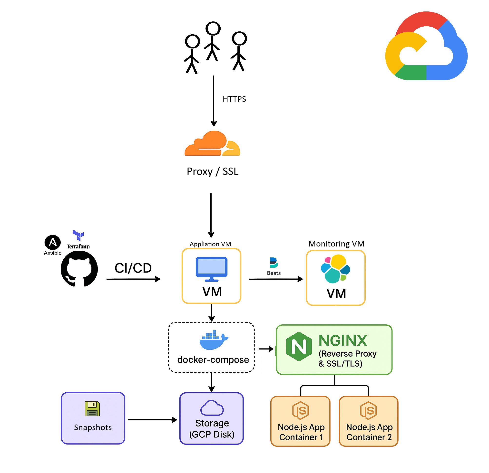

Infrastructure
Here you will find a detailed overview of the infrastructure used to build this site, including tools and technologies applied during its development.
You can also check out the source code in the open repository:
GitHub Repository
⚠️ Security Notice:
This project is publissscssly visible for demonstration and inspiration purposes.
No real credentials, private keys, or sensitive infrastructure details are included.
All access requires proper secrets and environment variables configured in CI/CD.
